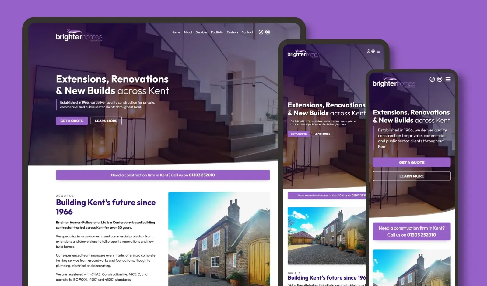

A ground-up redesign for an established building contractor. Modernising their online presence to properly reflect a 35-person firm with nearly 60 years of history.
Learn more Visit site
Brighter Homes are an established building contractor with around 35 employees, founded in 1966, specialising in high-value restoration and renovation projects. Their existing site, built years earlier from a template, no longer reflected the scale or reputation of the business. They needed something that felt considered and professional, and that properly showcased the quality of their work.
The brief centred on three things: modernise the look and feel, tell the company's story, and build a portfolio section that could do justice to their projects. Each portfolio entry has its own page with an overview, a detailed breakdown of the work, and before-and-after photography.
The result was a ground-up redesign and rebuild - clean, structured, and built to perform. Lighthouse scores sit at 90+ across the board. The managing director's verdict on seeing the finished site: "I bloody love it."
The linked version is the original design. The live site has since been modified by a third party.